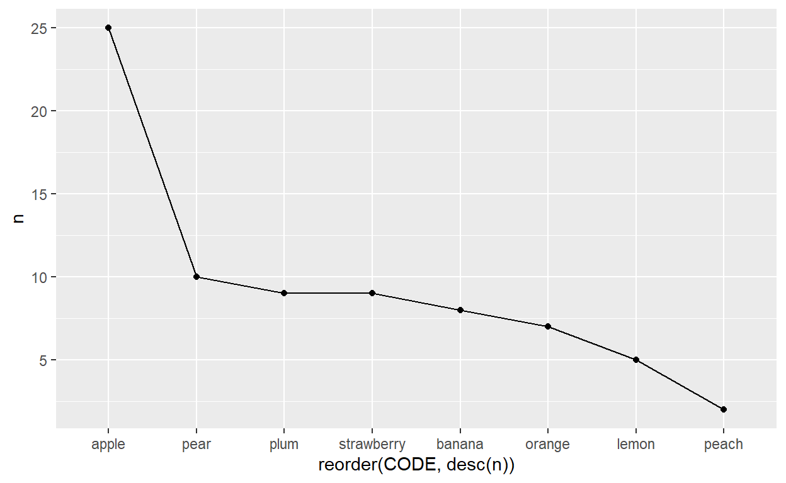
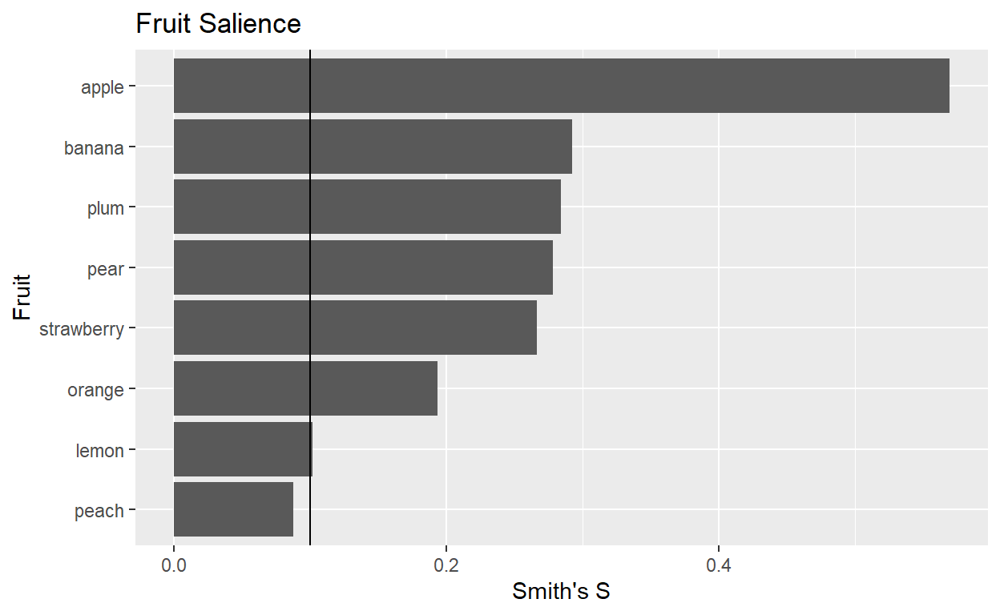
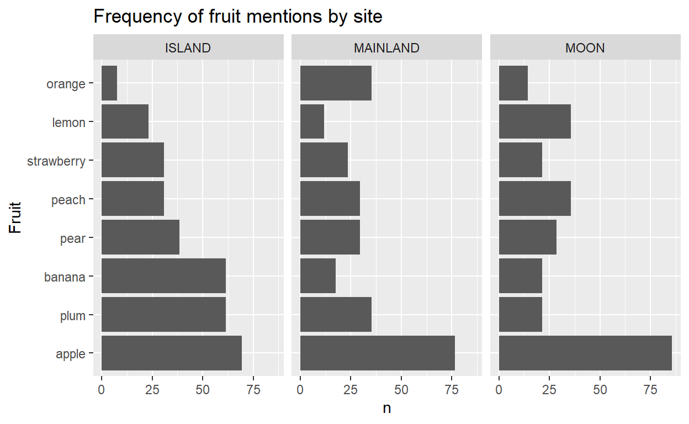
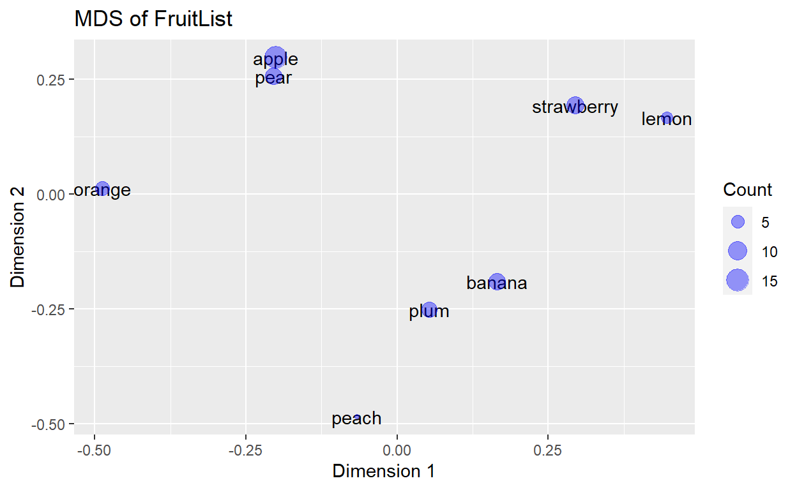
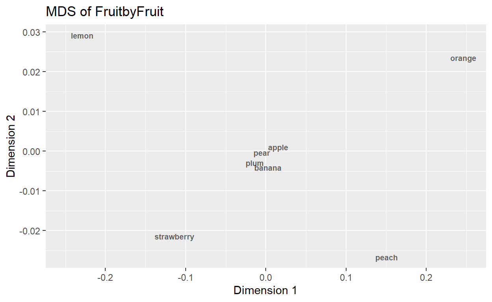
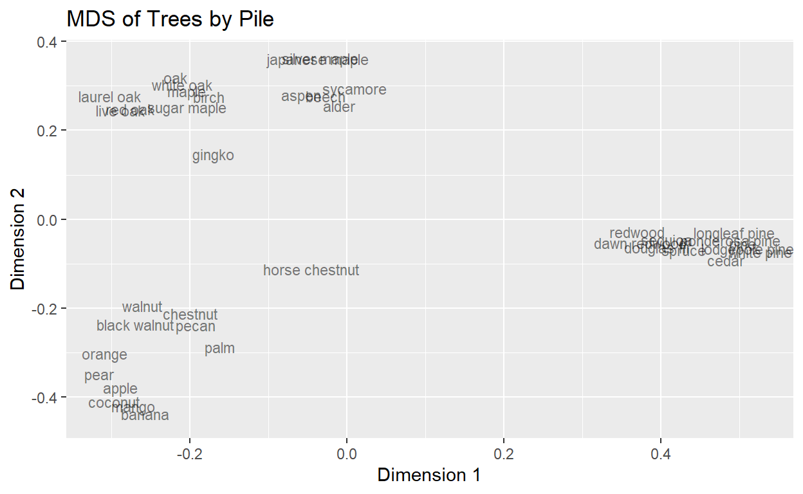
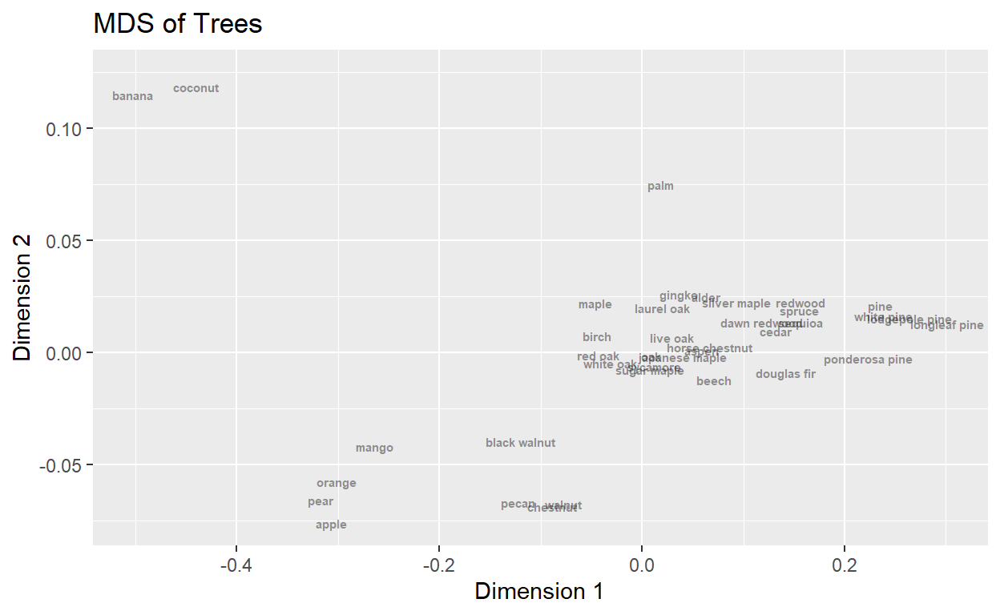
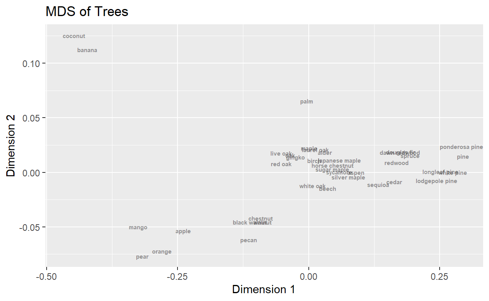

Useful links
Getting started
This lesson will teach you how to work with and analyze cultural domain data using R. This lesson draws in part on datasets and formulas from the Anthrotools package. You can get the data for this lesson here and here.
Load packages and data
library(tidyverse)
library(ggplot2)
library(tidyr)Second, let’s load the data we plan to use and assign it a name. Here
we will load the FruitList data. Take a look at the
head() and str() of this spreadsheet. How do
you think the data have been organized? What do the rows and columns
represent?
FruitList <- read.csv("D:/BSOS_Anthropology_R_Tutorial/ANTHROPOLOGY_R_TUTORIALS/data/FruitList.csv")
head(FruitList)str(FruitList)## 'data.frame': 75 obs. of 4 variables:
## $ X : int 1 2 3 4 5 6 7 8 9 10 ...
## $ Subj : int 1 1 1 2 2 2 3 3 4 4 ...
## $ Order: int 1 2 3 1 2 3 1 2 1 2 ...
## $ CODE : chr "pear" "orange" "apple" "apple" ...We can see that we have 75 rows with 4 variables. The X
variable is a numeric index autocreated by excel. The
Subj'variable is a numeric identifier for each interview
respondent. The Order variable represents the order in
which each fruit was named by each respondent. The CODE
variable contains each fruit named in the freelists.
Try it
How many respondents and unique fruits (‘items’) are in the
FruitList data? What are the unique fruits? Write down the
necessary code below!
length(unique(FruitList$Subj))
length(unique(FruitList$CODE))
unique(FruitList$CODE)From these few operations we now know a bit more about the dataset. There are 20 individuals who collectively named a total of 8 unique fruits.
Next, let’s calculate the average number of fruits named per person and explore the distribution of list lengths across responses.
# How many responses per subject
FruitList %>% group_by(Subj) %>% count()# What is the average number of responses per subject?
FruitList %>% group_by(Subj) %>% count() %>% ungroup() %>% summarise(mean=mean(n))# We can also do this in two parts by creating a new dataframe of the summarized data and then calculating the mean value in the "n" column
BySubject <- FruitList %>% group_by(Subj) %>% count()
mean(BySubject$n)
# This method also allows you to generate additional summary information
summary(BySubject$n)
# We can also make a table showing how many respondents had lists of length 2, 3, 4, and 5
table(BySubject$n)Item frequency analysis
Next, let’s analyze how frequently each fruit was mentioned. For this analysis we are going to create a new dataframe object called ‘ByFruit’ that groups the data according to each unique fruit and counts the number of rows.
Try it
Plot the number of times each type of fruit is mentioned by interviewees. Make a bar plot with flipped coordinates so that each fruit name is on the y axis and the number of mentions are on the x axis.
ggplot(ByFruit, aes(x=reorder(CODE,n),y=n)) + geom_bar(stat="identity") +coord_flip() +ggtitle("Frequency of fruit mentions") + labs(x="Fruit", y="n")Scree Plots
Another way to visualize these data is through a scree plot. In these types of plots data are arranged such that each point represents a single item, the y-value for which is its frequency of mention in the dataset. These types of plots can be used to quickly identify trends and cut-off points in the data.
ggplot(ByFruit, aes(x=reorder(CODE,desc(n)),y=n,group=1)) + geom_point() + geom_line()
Frequency vs. rank
In freelists, we often expect the more highly ranked items to also show up more frequently. The code below plots the frequency of fruit mention against its average rank to explore this pattern.
# First, we make a new 'ByFruit' object that includes the fruit frequency, top rank, and average rank.
ByFruit <- FruitList %>% group_by(CODE) %>% summarise(Frequency=n(),topRank=min(Order),avgRank=mean(Order))
ByFruit # Look at our new object#Plot these varables
plot(ByFruit$Frequency,ByFruit$avgRank)
With more observations there will often be a trend where the top ranking items show up most frequently. This is a toy dataset with only a few samples, so this may explain why the trend doesn’t seem supported, but try this out with your own freelist data.
Salience calculations
One of the main insights than can be learned from freelist data is the relative cultural salience of items in particular domains. For example, in the domain of household chores, we could determine whether vacuuming, washing dishes, shoveling the driveway, or feeding the snake are considered more salient or central to the idea of household chores compared to other tasks. We might find variations based on individual attributes or the cultural context in which the question is asked. Salience often mirrors frequency, but the calculation is a bit more complicated as it considers both an item’s frequency of mention and the order in which it is usually listed.
Luckily, the package AnthroTools has a built in salience
calculation function that can do the math for us. The code below
calculates the salience of each fruit listed in the context of each
individual interviewee.
FruitListSalience <- CalculateSalience(FruitList,Order="Order",Subj="Subj",CODE="CODE")
# Note: I have included the arguments for Order, Subj and CODE for illustrative purposes. Because these column names match the arguments, you do not actually need to include them in this case. However, when you are working with your own datasets you may have different column names, so it is helpful to keep the underlying structure of functions in mind when you deploy them.
FruitListSalienceThe above code calculates the salience for each item by respondent. If you inspect the results, you’ll see that the first item in each list has a salience of 1, with each subsequent item decreasing in relative salience. This is useful for understanding how an individual thinks about the domain of fruits, but what if we are interested in knowing how salient apples are across all responses? We can calculate the salience of particular items as well with the SalienceByCode() function.
Try it
Try running the SalienceByCode() function on the new
salience dataframe we made above.
SalienceByFruit <- SalienceByCode(FruitListSalience,dealWithDoubles="MAX") The dealwithdoubles argument tells R what to do if a
respondent lists the same item twice. There are a few different options
available for this, the right one to pick will depend on your data and
research question.
From this analysis we can see that there are slight differences in the mean salience and Smith’s S. Smith’s S considers the length of lists in its calculation of salience (More info here.
Now let’s plot the Smith’s S results in decreasing order and add a vertical line at the 0.1 mark. This range is generally considered a benchmark level for assessing item salience in freelists.
## CODE MeanSalience SumSalience SmithsS
## 1 pear 0.6958333 5.566667 0.2783333
## 2 orange 0.6444444 3.866667 0.1933333
## 3 apple 0.7588889 11.383333 0.5691667
## 4 strawberry 0.5925926 5.333333 0.2666667
## 5 banana 0.7312500 5.850000 0.2925000
## 6 plum 0.8119048 5.683333 0.2841667
## 7 lemon 0.5083333 2.033333 0.1016667
## 8 peach 0.8750000 1.750000 0.0875000ggplot(SalienceByFruit, aes(x=reorder(CODE,SmithsS),y=SmithsS)) + geom_bar(stat="identity") +coord_flip() +ggtitle("Fruit Salience") + labs(x="Fruit", y="Smith's S") + geom_hline(yintercept=0.1)
From this plot, it looks like most of the fruits could be considered salient in this dataset. However, although pears were mentioned slightly more frequently than bananas and plums, their salience is lower when their overall order within lists and other factors are taken into account.
Comparing across groups
It is also possible to compare item salience across different groups of respondents. The following example comes from the AnthroTools package which includes a sample grouping of the FruitList data. First, let’s load the new dataset. Because it is included in the AnthroTools package, we can load it directly with the data() function.
data("WorldList")
WorldListTry it
Try calculating the salience for each fruit, adding in an argument to
differentiate responses by GROUPING. The argument is
conveniently called GROUPING. First calculate the salience of each item
by response, then calculate the salience of each item. Refer to the code
we ran earlier in this lesson as a template to write your solution.
FL1 <- CalculateSalience(WorldList, Order="Order",Subj="Subj",CODE="CODE",GROUPING="GROUPING")
FL2<- SalienceByCode(FL1,GROUPING="GROUPING",dealWithDoubles = "MAX")#Note, this function will not run without adding in the GROUPING argument.
Frequency by group
In addition to evaluating salience, we might be interested in the percentage of respondents from each group who named a particular item. The code below creates a new object where the data are grouped according to the GROUPING variable.
frequencybygroup <- WorldList %>% group_by(GROUPING) %>% mutate(GroupN=length(unique(Subj))) %>% ungroup %>% group_by(GROUPING, CODE, GroupN) %>% summarise(totalResponses=n(),nRespondents=length(unique(Subj)),percentRespondents=round(length(unique(Subj))/first(GroupN)*100,2)) %>% arrange(GROUPING, desc(percentRespondents))## `summarise()` has grouped output by 'GROUPING', 'CODE'. You can override using
## the `.groups` argument.We can then plot the results of this grouping with a facet wrap graph.
ggplot(frequencybygroup, aes(x=reorder(CODE,desc(percentRespondents)),percentRespondents)) + geom_bar(stat="identity") + coord_flip() +ggtitle("Frequency of fruit mentions by site") + labs(x="Fruit", y="n") + facet_wrap(vars(GROUPING)) It looks like in all cases, apples were mentioned more frequently, but the different sample populations differ in their rates of mentioning oranges and bananas. One thing you will notice in this graph is that although the fruits are listed in descending order for the “ISLAND” sample, the order is not meaningful for the other sites. This is because in the faceted plot, the y axis is the same for each site, making it easier to compare across samples.
Comparing freelist lengths across groups
We can also compare the lengths of lists across each group. This shows us that the average list lengths were not very different across the groups, but were slightly higher in the Island population.
WorldList %>% group_by(GROUPING,Subj) %>% summarise(n=n()) %>% ungroup %>% group_by(GROUPING) %>% summarize(nResponse=n(),avgLength=mean(n),maxLength=max(n),minLength=min(n),medianLength=median(n))## `summarise()` has grouped output by 'GROUPING'. You can override using the
## `.groups` argument.Advanced Freelist Analysis
Co-occurence tables
Beyond investigating how many fruits are listed how frequently within the fruit domain, we are also interested in learning more about the structure of this domain. We can think of this as a type of mental map, how do people think about each item within the fruit domain relative to the other items?
One way to investigate this question is through examining
co-occurence of items within the same freelist. Essentially, how many
times is each pair of fruits mentioned by the same respondent? We can
create a co-occurence matrix with tidyverse tools or the
AnthroTools package.
Try it
Using FreeListTable() make a table indicating whether or
not each respondent mentioned a particular fruit. Hint: This is a
presence/absence table.
FruitListTable <- FreeListTable(FruitList, CODE = "CODE", Salience = "Salience", Subj = "Subj",
tableType = "PRESENCE")You can do the same operation with tidyverse.
#add new count column
FruitList$present <- rep(1)
# Spread into wide datatable. Note: spread function requires unique identifiers for rows, so here we remove any duplicate rows
FruitListWide <- FruitList %>% select(Subj,CODE,present) %>% unique %>% spread(CODE, present)
#convert NAs to 0
FruitListWide[is.na(FruitListWide)] <- 0
FruitListWide In this case, we have made a presence/absence matrix. That is, do the two items co-occur or not. You could also create a matrix that is weighted based on the number of co-occurences. the co-occurence matrix can now be used for clustering, MDS, network analysis and other analyses.
Multidimensional scaling
With the matrix we made above, we can analyze how similar or dissimilar each fruit it from one another using multidimensional scaling (MDS). The data manipulations can be a little tricky, but I’ve included the code below to get you started.
# Here we use the FruitListWide dataframe we made above.
## Convert dataframe into presence/absence only by removing the first column. First we can assign the Subj column to the rownames
rownames(FruitListWide) <- FruitListWide$Subj
# Remove the subj column
FruitListWide<-FruitListWide[,-1]
# Now convert datasetbyword matrix to a wordbyword co-occurance matrix
FruitListWide <- as.matrix(FruitListWide)
FruitsBySubj <- t(FruitListWide)
# Look at data structure
FruitsBySubj## 1 2 3 4 5 6 7 8 9 10 11 12 13 14 15 16 17 18 19 20
## apple 1 1 0 1 1 1 0 1 1 1 1 1 0 1 1 0 1 1 0 1
## banana 0 0 1 1 0 0 1 0 0 0 1 0 1 1 0 1 0 1 0 0
## lemon 0 0 0 0 0 1 1 0 0 0 1 0 0 0 0 0 0 0 1 0
## orange 1 0 0 1 0 0 0 0 0 0 0 1 0 0 0 0 1 1 0 1
## peach 0 0 0 0 0 0 0 0 0 0 0 0 1 0 0 0 0 1 0 0
## pear 1 0 0 0 0 0 0 1 0 1 0 1 0 1 0 1 0 1 1 0
## plum 0 0 0 1 0 0 1 0 1 0 0 0 1 0 1 1 0 0 0 1
## strawberry 0 1 1 0 1 0 0 1 0 0 1 0 1 1 1 0 0 0 1 0FruitsByFruits <- crossprod(FruitListWide)
## Make a distance matrix
FruitDistanceMatrix <- cmdscale(dist(FruitsBySubj))
FruitDistanceMatrixDF<- data.frame(FruitDistanceMatrix)
## Using binary mds method
FruitsBySubj %>% dist(method="binary") %>% cmdscale(eig=T, k=2) -> test2
test3 <- data.frame(test2$points) %>% #mds coordinates
bind_cols(Fruits = rownames(FruitsBySubj)) %>% #bind sample names
bind_cols(count=rowSums(FruitsBySubj)) #bind count by each fruit
# Look at results
test3## Plot results
ggplot(test3,aes(x = X1,y = X2, label = Fruits)) +geom_text() + geom_point(aes(size=count),alpha=0.4,color="blue")+labs(size="Count",x="Dimension 1", y="Dimension 2") + ggtitle("MDS of FruitList")
This MDS shows the fruits by reponses, showing us how the fruits are mentioned by different types of respondents. We might also be interested in an MDS of the fruits by fruits co-occurence, which can be calculated through the code below.
## Using binary mds method
FruitsByFruits %>% dist(method="binary") %>% cmdscale(eig=T, k=2) -> test4
test5 <- data.frame(test4$points) %>% #mds coordinates
bind_cols(Fruits = rownames(FruitsByFruits))#bind sample names
# Look at results
#test5
## Plot results
ggplot(test5,aes(x = X1,y = X2, label = Fruits)) +geom_text(fontface="bold",size=2.5,alpha=0.6,position=position_jitter(width=0.05, height=0.005)) + geom_point(size=NA)+labs(x="Dimension 1", y="Dimension 2") + ggtitle("MDS of FruitbyFruit")## Warning: Removed 8 rows containing missing values (`geom_point()`).
This plot shows us which fruits are more central to the domain “fruits” across all the respondents and which are more peripheral. The fruits in the center of the plot co-occur more frequently since they are in more of the freelists in the sample. Borgatti has a useful presentation explaining more.
Pile Sorts
Data wrangling
In addition to freelist data, pile sorts are a common tool used in cultural domain analysis. I’ve made a sample dataset of pilesorts of 40 trees from 9 individuals. You can load the data in the same way we loaded the fruitlist data. We are doing a bit of data wrangling to get the data into the right format for MDS scaling. Hopefully this helps you understand a bit about how data can be shaped and reshaped no matter what form it comes to you in!
treepilesort <- read.csv("D:/BSOS_Anthropology_R_Tutorial/ANTHROPOLOGY_R_TUTORIALS/data/pilesort_sampledata.csv")
rownames(treepilesort) <- treepilesort$Tree
# Remove tree column
treepilesort <- treepilesort[,-1]
# Flip so rows are individual responses
PersonbyTree <- t(treepilesort)
PersonbyTree<-as.data.frame(PersonbyTree) # make the output into a dataframeTry it
1. Currently the row names correspond to each respondent code (letters from A to I). Append these rownames to the dataframe as a new column named “Person”.
PersonbyTree$Person <- rownames(PersonbyTree)2. Convert the dataframe from wide to long format, where each row
conveys which respondent placed which fruit into which pile. Hint: if
using gather() you might need a third argument
maple:coconut. You might also consider using
pivot_longer().
PersonbyTreeLong <- PersonbyTree %>% gather(Species,Pile,maple:coconut)The above operation can be done using tidyverse as
well!
#another way with tidyverse
PersonbyTree %>% pivot_longer(!Person, names_to = "Species", values_to = "Pile")
PersonbyTree %>% pivot_longer(-Tree,names_to="Species",values_to="Pile") #Another way to do this with new tidyverseNow that our data are in a long format we can add in a new unique identifier for each person_pile combination. This step is required because the piles have numeric names that repeat across respondents. Next we can make a presence/absence column that will be useful for creating a new matrix based on whether or not a tree occurs in a particular pile.
PersonbyTreeLong <- PersonbyTree %>% gather(Species,Pile,maple:coconut)
PersonbyTreeLong<- PersonbyTreeLong %>% mutate(PersonPile=paste(Person,Pile,sep="_"))Now we can convert the data back into a wide format, where each column is a different tree species and the values represent presence or absence of the tree.
# Spread into wide datatable. Note: spread function requires unique identifiers for rows, so here we remove any duplicate rows
TreeWide <- PersonbyTreeLong %>% select(PersonPile,Species,present) %>% unique %>% spread(Species, present)
# Convert NAs to 0
TreeWide[is.na(TreeWide)] <- 0
head(TreeWide)This dataframe looks great. The multidimensional scaling functions in R take a matrix however, so we will convert the dataframe into two different matrices following the same procedure we used for the fruit data.
## Convert dataframe into presenve/absence only by removing the first column. First we can assign the Subj column to the rownames
rownames(TreeWide) <- TreeWide$PersonPile
# Remove the subj column
TreeWide<-TreeWide[,-1]
# Now convert datasetbyword matrix to a wordbyword co-occurance matrix
TreeWide <- as.matrix(TreeWide)
TreeByPile <- t(TreeWide)
# Look at data structure
TreeByPile## A_1 A_2 A_3 B_1 B_2 B_3 C_1 C_2 C_3 C_4 D_1 D_2 D_3 D_4 D_5 D_6
## alder 1 0 0 1 0 0 0 0 1 0 0 0 0 0 1 0
## apple 0 1 0 1 0 0 1 0 0 0 0 0 1 0 0 0
## aspen 1 0 0 1 0 0 0 0 1 0 0 0 0 0 1 0
## banana 0 1 0 0 1 0 1 0 0 0 0 0 0 1 0 0
## beech 1 0 0 1 0 0 0 0 1 0 0 0 0 0 1 0
## birch 1 0 0 1 0 0 0 0 1 0 0 0 0 0 1 0
## black walnut 0 0 1 1 0 0 0 1 0 0 0 0 0 0 0 1
## cedar 1 0 0 0 0 1 0 0 0 1 0 0 0 0 0 1
## chestnut 0 0 1 1 0 0 0 1 0 0 0 0 0 0 0 1
## coconut 0 1 0 0 1 0 1 0 0 0 0 0 0 1 0 0
## dawn redwood 1 0 0 0 0 1 0 0 0 1 0 0 0 0 0 1
## douglas fir 1 0 0 0 0 1 0 0 0 1 0 0 0 0 0 1
## gingko 1 0 0 1 0 0 0 0 1 0 0 0 0 0 0 0
## horse chestnut 0 0 1 1 0 0 0 1 0 0 0 0 0 0 0 1
## japanese maple 1 0 0 1 0 0 0 0 1 0 1 0 0 0 0 0
## laurel oak 1 0 0 1 0 0 0 0 1 0 0 1 0 0 0 0
## live oak 1 0 0 1 0 0 0 0 1 0 0 1 0 0 0 0
## lodgepole pine 1 0 0 0 0 1 0 0 0 1 0 0 0 0 0 0
## longleaf pine 1 0 0 0 0 1 0 0 0 1 0 0 0 0 0 0
## mango 0 1 0 1 0 0 1 0 0 0 0 0 0 1 0 0
## maple 1 0 0 1 0 0 0 0 1 0 1 0 0 0 0 0
## oak 1 0 0 1 0 0 0 0 1 0 0 1 0 0 0 0
## orange 0 1 0 1 0 0 1 0 0 0 0 0 1 0 0 0
## palm 1 0 0 0 1 0 1 0 0 0 0 0 0 1 0 0
## pear 0 1 0 1 0 0 1 0 0 0 0 0 1 0 0 0
## pecan 0 0 1 1 0 0 0 1 0 0 0 0 0 0 0 1
## pine 1 0 0 0 0 1 0 0 0 1 0 0 0 0 0 0
## ponderosa pine 1 0 0 0 0 1 0 0 0 1 0 0 0 0 0 0
## red oak 1 0 0 1 0 0 0 0 1 0 0 1 0 0 0 0
## redwood 1 0 0 0 0 1 0 0 0 1 0 0 0 0 0 1
## sequioa 1 0 0 0 0 1 0 0 0 1 0 0 0 0 0 1
## silver maple 1 0 0 1 0 0 0 0 1 0 1 0 0 0 0 0
## spruce 1 0 0 0 0 1 0 0 0 1 0 0 0 0 0 1
## sugar maple 1 0 0 1 0 0 0 0 1 0 1 0 0 0 0 0
## sycamore 1 0 0 1 0 0 0 0 1 0 0 0 0 0 1 0
## walnut 0 0 1 1 0 0 0 1 0 0 0 0 0 0 0 1
## white oak 1 0 0 1 0 0 0 0 1 0 0 1 0 0 0 0
## white pine 1 0 0 0 0 1 0 0 0 1 0 0 0 0 0 0
## D_7 D_8 E_1 E_10 E_2 E_3 E_4 E_5 E_6 E_7 E_8 E_9 F_1 F_10 F_11
## alder 0 0 0 0 0 0 0 0 0 0 0 1 0 0 0
## apple 0 0 0 1 0 0 0 0 0 0 0 0 0 0 0
## aspen 0 0 0 0 0 0 0 0 0 0 0 1 0 0 0
## banana 0 0 1 0 0 0 0 0 0 0 0 0 0 0 0
## beech 0 0 0 0 0 0 0 0 0 0 0 1 0 0 0
## birch 0 0 0 0 0 0 0 0 0 0 0 1 0 0 0
## black walnut 0 0 0 0 1 0 0 0 0 0 0 0 0 0 0
## cedar 0 0 0 0 0 0 0 1 0 0 0 0 0 0 0
## chestnut 0 0 0 0 1 0 0 0 0 0 0 0 0 0 0
## coconut 0 0 1 0 0 0 0 0 0 0 0 0 0 0 0
## dawn redwood 0 0 0 0 0 0 0 0 1 0 0 0 0 0 1
## douglas fir 0 0 0 0 0 0 0 1 0 0 0 0 0 0 0
## gingko 0 1 0 0 0 0 1 0 0 0 0 0 0 0 0
## horse chestnut 0 0 0 0 1 0 0 0 0 0 0 0 0 0 0
## japanese maple 0 0 0 0 0 0 0 0 0 1 0 0 1 0 0
## laurel oak 0 0 0 0 0 0 0 0 0 0 1 0 0 0 0
## live oak 0 0 0 0 0 0 0 0 0 0 1 0 0 0 0
## lodgepole pine 1 0 0 0 0 0 0 1 0 0 0 0 0 0 0
## longleaf pine 1 0 0 0 0 0 0 1 0 0 0 0 0 0 0
## mango 0 0 1 0 0 0 0 0 0 0 0 0 0 1 0
## maple 0 0 0 0 0 0 0 0 0 1 0 0 1 0 0
## oak 0 0 0 0 0 0 0 0 0 0 1 0 0 0 0
## orange 0 0 0 1 0 0 0 0 0 0 0 0 0 0 0
## palm 0 0 1 0 0 0 0 0 0 0 0 0 0 0 0
## pear 0 0 0 1 0 0 0 0 0 0 0 0 0 0 0
## pecan 0 0 0 0 1 0 0 0 0 0 0 0 0 0 0
## pine 1 0 0 0 0 0 0 1 0 0 0 0 0 0 0
## ponderosa pine 1 0 0 0 0 0 0 1 0 0 0 0 0 0 0
## red oak 0 0 0 0 0 0 0 0 0 0 1 0 0 0 0
## redwood 0 0 0 0 0 0 0 0 1 0 0 0 0 0 1
## sequioa 0 0 0 0 0 0 0 0 1 0 0 0 0 0 1
## silver maple 0 0 0 0 0 0 0 0 0 1 0 0 1 0 0
## spruce 0 0 0 0 0 0 0 1 0 0 0 0 0 0 0
## sugar maple 0 0 0 0 0 0 0 0 0 1 0 0 1 0 0
## sycamore 0 0 0 0 0 1 0 0 0 0 0 0 0 0 0
## walnut 0 0 0 0 1 0 0 0 0 0 0 0 0 0 0
## white oak 0 0 0 0 0 0 0 0 0 0 1 0 0 0 0
## white pine 1 0 0 0 0 0 0 1 0 0 0 0 0 0 0
## F_12 F_13 F_14 F_15 F_16 F_17 F_18 F_19 F_2 F_20 F_3 F_4 F_5 F_6
## alder 0 0 0 0 0 0 1 0 0 0 0 0 0 0
## apple 0 0 0 0 0 0 0 0 0 0 1 0 0 0
## aspen 0 0 0 0 0 0 0 1 0 0 0 0 0 0
## banana 0 0 0 0 0 0 0 0 0 0 0 0 0 0
## beech 0 0 0 0 0 0 0 0 0 1 0 0 0 0
## birch 0 0 0 0 0 0 0 0 0 0 0 0 0 1
## black walnut 0 0 0 0 0 0 0 0 0 0 0 0 0 0
## cedar 0 1 0 0 0 0 0 0 0 0 0 0 0 0
## chestnut 0 0 0 0 0 0 0 0 0 0 0 0 0 0
## coconut 0 0 0 0 0 0 0 0 0 0 0 0 1 0
## dawn redwood 0 0 0 0 0 0 0 0 0 0 0 0 0 0
## douglas fir 0 0 1 0 0 0 0 0 0 0 0 0 0 0
## gingko 0 0 0 1 0 0 0 0 0 0 0 0 0 0
## horse chestnut 0 0 0 0 0 0 0 0 0 0 0 0 0 0
## japanese maple 0 0 0 0 0 0 0 0 0 0 0 0 0 0
## laurel oak 0 0 0 0 0 0 0 0 1 0 0 0 0 0
## live oak 0 0 0 0 0 0 0 0 1 0 0 0 0 0
## lodgepole pine 1 0 0 0 0 0 0 0 0 0 0 0 0 0
## longleaf pine 1 0 0 0 0 0 0 0 0 0 0 0 0 0
## mango 0 0 0 0 0 0 0 0 0 0 0 0 0 0
## maple 0 0 0 0 0 0 0 0 0 0 0 0 0 0
## oak 0 0 0 0 0 0 0 0 1 0 0 0 0 0
## orange 0 0 0 0 0 0 0 0 0 0 0 1 0 0
## palm 0 0 0 0 0 0 0 0 0 0 0 0 1 0
## pear 0 0 0 0 0 0 0 0 0 0 1 0 0 0
## pecan 0 0 0 0 0 1 0 0 0 0 0 0 0 0
## pine 1 0 0 0 0 0 0 0 0 0 0 0 0 0
## ponderosa pine 1 0 0 0 0 0 0 0 0 0 0 0 0 0
## red oak 0 0 0 0 0 0 0 0 1 0 0 0 0 0
## redwood 0 0 0 0 0 0 0 0 0 0 0 0 0 0
## sequioa 0 0 0 0 0 0 0 0 0 0 0 0 0 0
## silver maple 0 0 0 0 0 0 0 0 0 0 0 0 0 0
## spruce 0 1 0 0 0 0 0 0 0 0 0 0 0 0
## sugar maple 0 0 0 0 0 0 0 0 0 0 0 0 0 0
## sycamore 0 0 0 0 1 0 0 0 0 0 0 0 0 0
## walnut 0 0 0 0 0 0 0 0 0 0 0 0 0 0
## white oak 0 0 0 0 0 0 0 0 1 0 0 0 0 0
## white pine 1 0 0 0 0 0 0 0 0 0 0 0 0 0
## F_7 F_8 F_9 G_1 G_2 H_1 H_10 H_2 H_3 H_4 H_5 H_6 H_7 H_8 H_9 I_1
## alder 0 0 0 0 1 0 0 0 0 0 1 0 0 0 0 0
## apple 0 0 0 1 0 0 1 0 0 0 0 0 0 0 0 0
## aspen 0 0 0 0 1 0 0 0 0 0 1 0 0 0 0 0
## banana 0 0 1 1 0 0 0 0 0 0 0 1 0 0 0 0
## beech 0 0 0 0 1 0 0 0 0 0 1 0 0 0 0 0
## birch 0 0 0 1 0 0 0 0 0 0 1 0 0 0 0 0
## black walnut 1 0 0 1 0 0 0 0 0 0 0 0 1 0 0 0
## cedar 0 0 0 0 1 0 0 0 1 0 0 0 0 0 0 0
## chestnut 0 1 0 1 0 0 0 0 0 0 0 0 1 0 0 0
## coconut 0 0 0 1 0 0 0 0 0 0 0 1 0 0 0 0
## dawn redwood 0 0 0 0 1 1 0 0 0 0 0 0 0 0 0 0
## douglas fir 0 0 0 0 1 0 0 0 1 0 0 0 0 0 0 0
## gingko 0 0 0 1 0 0 0 0 0 1 0 0 0 0 0 0
## horse chestnut 0 1 0 0 1 0 0 0 0 0 1 0 0 0 0 0
## japanese maple 0 0 0 0 1 0 0 0 0 0 0 0 0 1 0 1
## laurel oak 0 0 0 1 0 0 0 0 0 0 0 0 0 0 1 0
## live oak 0 0 0 1 0 0 0 0 0 0 0 0 0 0 1 0
## lodgepole pine 0 0 0 0 1 0 0 1 0 0 0 0 0 0 0 0
## longleaf pine 0 0 0 0 1 0 0 1 0 0 0 0 0 0 0 0
## mango 0 0 0 1 0 0 0 0 0 0 0 1 0 0 0 0
## maple 0 0 0 1 0 0 0 0 0 0 0 0 0 1 0 1
## oak 0 0 0 1 0 0 0 0 0 0 0 0 0 0 1 0
## orange 0 0 0 1 0 0 1 0 0 0 0 0 0 0 0 0
## palm 0 0 0 1 0 0 0 0 0 0 0 1 0 0 0 0
## pear 0 0 0 1 0 0 1 0 0 0 0 0 0 0 0 0
## pecan 0 0 0 1 0 0 0 0 0 0 0 0 1 0 0 0
## pine 0 0 0 0 1 0 0 1 0 0 0 0 0 0 0 0
## ponderosa pine 0 0 0 0 1 0 0 1 0 0 0 0 0 0 0 0
## red oak 0 0 0 1 0 0 0 0 0 0 0 0 0 0 1 0
## redwood 0 0 0 0 1 1 0 0 0 0 0 0 0 0 0 0
## sequioa 0 0 0 0 1 1 0 0 0 0 0 0 0 0 0 0
## silver maple 0 0 0 0 1 0 0 0 0 0 0 0 0 1 0 1
## spruce 0 0 0 0 1 0 0 0 1 0 0 0 0 0 0 0
## sugar maple 0 0 0 1 0 0 0 0 0 0 0 0 0 1 0 1
## sycamore 0 0 0 0 1 0 0 0 0 0 1 0 0 0 0 0
## walnut 1 0 0 1 0 0 0 0 0 0 0 0 1 0 0 0
## white oak 0 0 0 1 0 0 0 0 0 0 0 0 0 0 1 0
## white pine 0 0 0 0 1 0 0 1 0 0 0 0 0 0 0 0
## I_10 I_11 I_12 I_13 I_2 I_3 I_4 I_5 I_6 I_7 I_8 I_9
## alder 0 0 0 0 0 0 0 0 1 0 0 0
## apple 0 0 0 0 0 1 0 0 0 0 0 0
## aspen 0 0 0 0 0 0 0 1 0 0 0 0
## banana 0 0 0 0 0 1 0 0 0 0 0 0
## beech 0 0 0 0 0 0 0 1 0 0 0 0
## birch 0 0 0 0 0 0 0 1 0 0 0 0
## black walnut 0 0 0 0 0 0 0 0 0 1 0 0
## cedar 1 0 0 0 0 0 0 0 0 0 0 0
## chestnut 0 0 0 0 0 0 0 0 0 1 0 0
## coconut 0 0 0 0 0 1 0 0 0 0 0 0
## dawn redwood 0 0 0 0 0 0 0 0 0 0 1 0
## douglas fir 0 0 1 0 0 0 0 0 0 0 0 0
## gingko 0 0 0 1 0 0 0 0 0 0 0 0
## horse chestnut 0 0 0 0 0 0 0 0 1 0 0 0
## japanese maple 0 0 0 0 0 0 0 0 0 0 0 0
## laurel oak 0 0 0 0 1 0 0 0 0 0 0 0
## live oak 0 0 0 0 1 0 0 0 0 0 0 0
## lodgepole pine 1 0 0 0 0 0 0 0 0 0 0 0
## longleaf pine 1 0 0 0 0 0 0 0 0 0 0 0
## mango 0 0 0 0 0 1 0 0 0 0 0 0
## maple 0 0 0 0 0 0 0 0 0 0 0 0
## oak 0 0 0 0 1 0 0 0 0 0 0 0
## orange 0 0 0 0 0 1 0 0 0 0 0 0
## palm 0 0 0 0 0 0 1 0 0 0 0 0
## pear 0 0 0 0 0 1 0 0 0 0 0 0
## pecan 0 0 0 0 0 0 0 0 0 1 0 0
## pine 0 0 0 0 0 0 0 0 0 0 0 1
## ponderosa pine 1 0 0 0 0 0 0 0 0 0 0 0
## red oak 0 0 0 0 1 0 0 0 0 0 0 0
## redwood 0 0 0 0 0 0 0 0 0 0 1 0
## sequioa 0 0 0 0 0 0 0 0 0 0 1 0
## silver maple 0 0 0 0 0 0 0 0 0 0 0 0
## spruce 0 1 0 0 0 0 0 0 0 0 0 0
## sugar maple 0 0 0 0 0 0 0 0 0 0 0 0
## sycamore 0 0 0 0 0 0 0 0 1 0 0 0
## walnut 0 0 0 0 0 0 0 0 0 1 0 0
## white oak 0 0 0 0 1 0 0 0 0 0 0 0
## white pine 1 0 0 0 0 0 0 0 0 0 0 0Multidimensional scaling
Now that our data are in the proper format, we can examine them with MDS.
#FIRST looking at tree by pile
##distance matrix
TreeByPileMatrix <- cmdscale(dist(TreeByPile))
TreeByPileMatrixDF<- data.frame(TreeByPileMatrix)
##using binary mds method
TreeByPile %>% dist(method="binary") %>% cmdscale(eig=T, k=2) -> test2
test3 <- data.frame(test2$points) %>% #mds coordinates
bind_cols(Trees= rownames(TreeByPile)) %>% #bind sample names
bind_cols(count=rowSums(TreeByPile)) #bind count by each fruit
# Look at results
test3##plot results
ggplot(test3,aes(x = X1,y = X2, label = Trees))+geom_text(cex=3,alpha=0.5,position=position_jitter(width=0.05, height=0.05)) + geom_point(size=NA)+labs(x="Dimension 1", y="Dimension 2") + ggtitle("MDS of Trees by Pile")## Warning: Removed 38 rows containing missing values (`geom_point()`).
This plot shows an MDS of the trees by which pile they are in. It
shows us there are 4-5 different types of piles usually made by
respondents. This can help in interpretation, but often we are most
interested in the relationship between each tree species and the other
tree species. For this, we work with a TreebyTree
matrix.
# Make a treebytree dataframe
TreebyTree <- crossprod(TreeWide)
head(TreebyTree)
## Using binary mds method
TreebyTree %>% dist(method="binary") %>% cmdscale(eig=T, k=2) -> test4
test5 <- data.frame(test4$points) %>% #mds coordinates
bind_cols(Trees = rownames(TreebyTree))#bind sample names
# Look at results
test5Then we can plot the results.
## Plot results
ggplot(test5,aes(x = X1,y = X2, label = Trees)) +geom_text(fontface="bold",size=2,alpha=0.4,position=position_jitter(width=0.05, height=0.02)) + geom_point(size=NA)+labs(x="Dimension 1", y="Dimension 2") + ggtitle("MDS of Trees")## Warning: Removed 38 rows containing missing values (`geom_point()`).
This plot can be a bit difficult to read at times depending on how the labels are plotted. You can rerun the code until a more legible version of the graph is generated. You can also adjust the label transparency, size, and jitter to improve graph legibility. So far, it looks like the people in this sample consider coconuts and bananas to be very different from all the other trees, while pines exhibit their own cluster but are still more similar to other trees than to the coconut-banana cluster.
Cluster analysis
In addition to multidimensional scaling, we can also examine the pilesort data through hierarchical clustering. This method allows us to understand the hiararchy of cluster similarities to one another. The code below allows us to create a cluster dendrogram of the tree data.
# Then we can run a cluster analysis on the pile sort data
# Code adapted from: https://www.r-bloggers.com/clustering-music-genres-with-r/. Check it out for examples of how to take this analysis further.
#first turn data into matrix and remove diagonal
TreebyTreeMat <- as.matrix(TreebyTree)
diag(TreebyTreeMat) <- 0
#make distance matrix of co-occurence data
TreeDistMat <- dist(TreebyTreeMat)
#perform hierchical clustering on data
TreeHC <- hclust(TreeDistMat, method="ward.D")
plot(TreeHC,xlab="Tree species", sub="Ward's method")
Depending on which height the graph is cut at, different numbers of tree clusters are created. This visualization can help us better understand how similar or dissimilar groups of trees are to one another, depending on the level of similarity used as a benchmark. For example, if we cut the dendrogram at a height of 100, there will be two cluster, which roughly correspond to conifers and non-conifers. However, if we cut the dendrogram at a height of 20, we will have 5 clusters, which could be named something like conifers, oaks, non-oak non-fruit/nut bearing, fruit trees, and nut trees. The level at which you choose to define clusters depends on both the data analysis results and questions of your study.